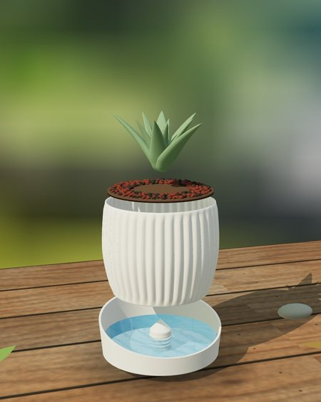
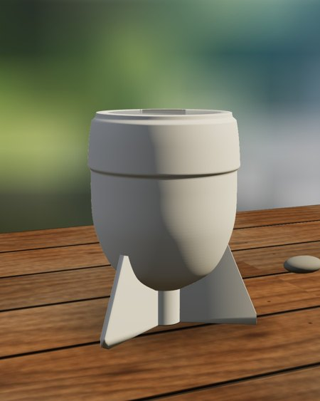
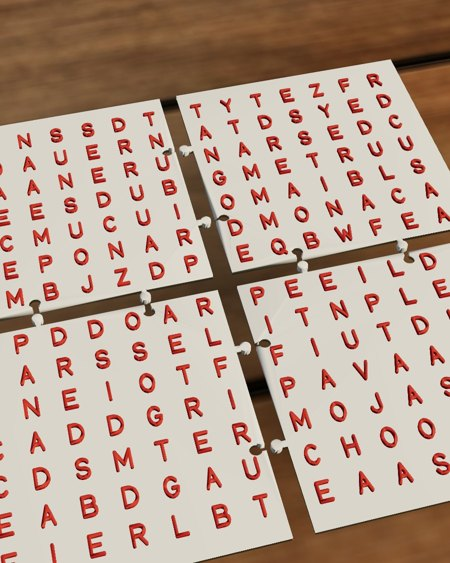
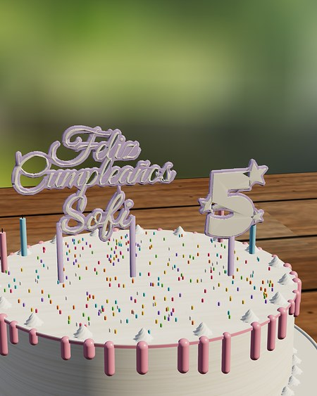
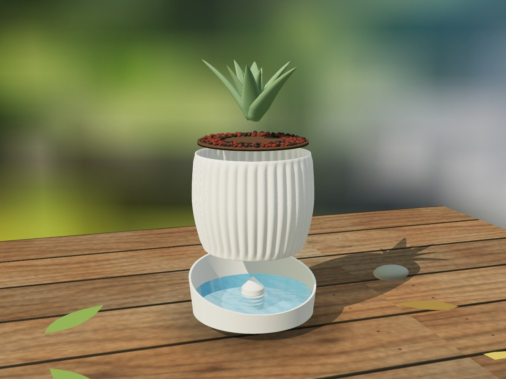
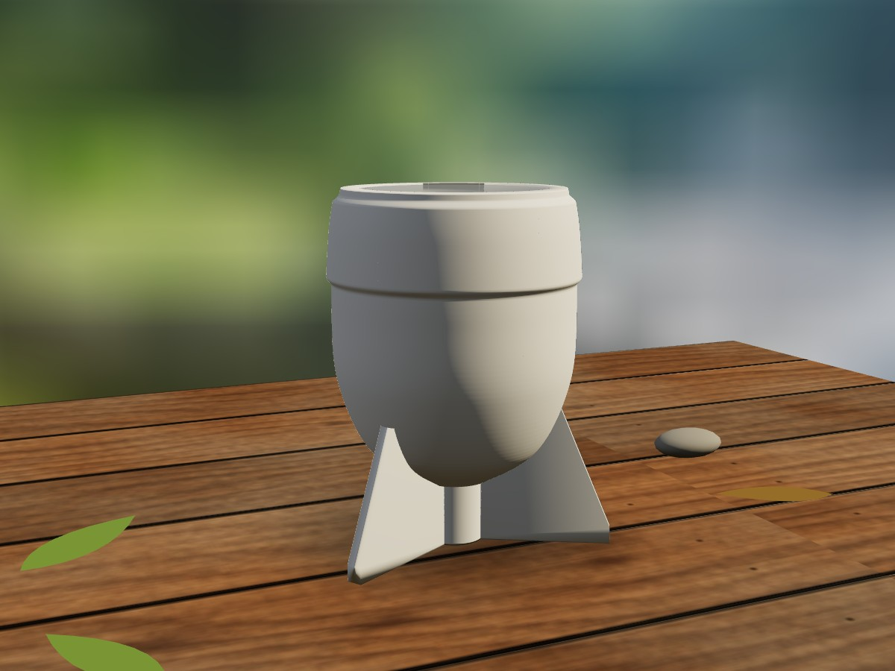
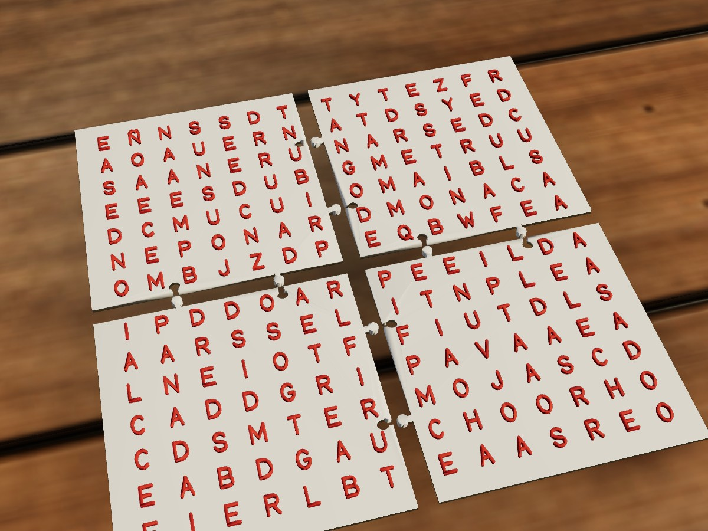
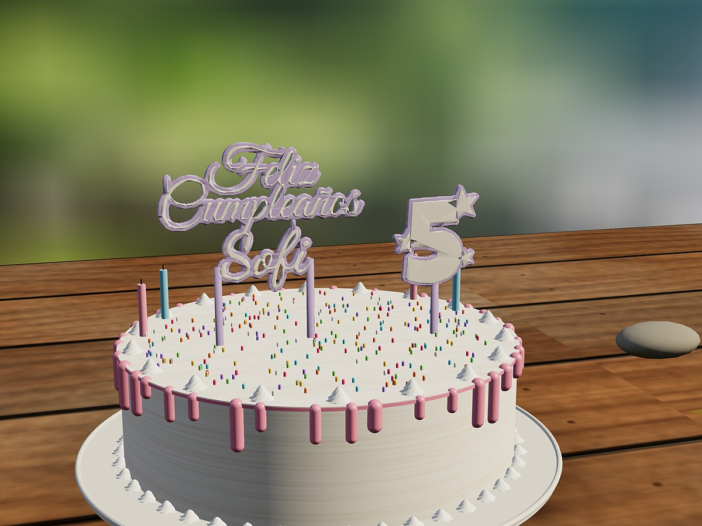

Herramientas gratis para la comunidad de YouTube. Corren en tu navegador: no hay nada que instalar.





Elegí un diseño, el tamaño y el plato con autorriego. Lo ves en 3D y bajás el archivo listo para imprimir.

Elegí un modelo de mate imperial y el inserto. El motor calcula el hueco exacto, agranda el mate si hace falta y lo bajás listo para imprimir.

Escribí tus palabras: el motor arma la sopa, la corta en piezas que encastran para que entre en tu impresora y la bajás lista para imprimir.

Escribí hasta tres líneas (por ejemplo Feliz / Cumpleaños / el nombre), elegí la tipografía de cada una y el motor arma el topper en una sola pieza, con los palitos para clavarlo en la torta.